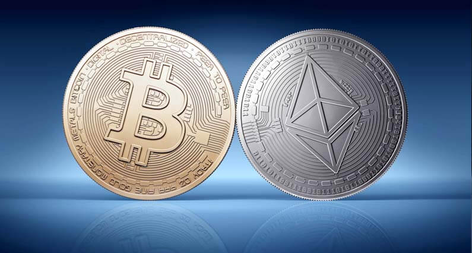
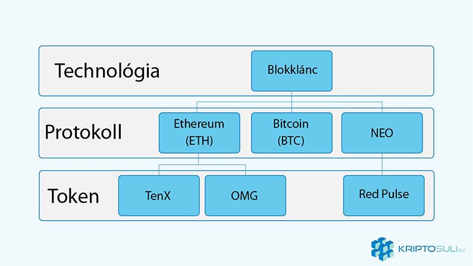
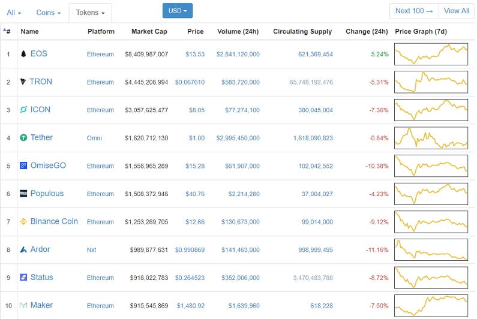

Mi a különbség a kriptovaluta érmék (Coin) és tokenek (Token) között?
Azoknak akik újak a kriptovaluták világában, nehéz lehet megérteni a különbséget az érmék és tokenek között. Az érme és token kifejezést sokan összekeverik, és sokan sokféleképp értelmezik őket. Ebben a cikkben azonban megtudhatod a kettő közötti különbséget.
Mi az a kriptovaluta?
Kezdjük a kriptovaluták alapjainak megértésével. Kriptovaluta egy digitális vagy virtuális fizetőeszköz amelyek kriptográfia használatával vannak titkosítva. A kriptográfia a tranzakciók átvitelének biztosítására és ellenőrzésére szolgál. Bitcoin az első decentralizált kriptopénz amely nyilvános főkönyvet használ amely tárolja az elvégzett tranzakciókat időrendi sorrendben. Ez az úgynevezett blokklánc.
Érmék és tokenek
Kriptopénz érme egy valuta amely más platformoktól függetlenül működik. Például Bitcoin, Dash, Litecoin. Tág értelemben véve az érme csak egy fizetőeszköz, míg a token több funkcióval rendelkezik.
Token olyan kriptovaluta amelynek egy másik platformra van szüksége a működéshez. Ilyen platform lehet Ethereum, NEO és Cardano. Token példák pedig OmiseGo, Golem, TenX.
Kriptopénznek vagy kriptovalutának nevezzük az érméket (Coin) és a tokeneket (token) is. Az kripto érme célja, hogy lehetővé tegye a kereskedelmet. Minél többen fogadnak el egy adott érmét annál nagyobb lesz a népszerűsége amely árnövekedéshez vezet. Ezek az érmék a blokklánc fizetőeszközei, mint Bitcoin, Litecoin vagy Monero.
A blokklánc tokeneknek is van értéke, de nem nevezhetőek pénznek olyan értelemben mint a kriptopénz érmék. Tokeneknek általában egy másik blokklánc technológiára épülnek, mint Ethereum vagy Cardano amely lehetővé teszi a felhasználóknak, hogy létrehozzák őket az eredeti érme segítségével.
Tokenek a digitális vagyontárgyai a Dapp-oknak a blokklánc rendszerben. Tehát magukban nincs értékük, hanem a Dapp értékét jelképezik. Tokeneknek sokkal több funkciójuk van mint a sima érméknek. Használható szavazati jogok megszerzésére a hálózatban, amellyel beleszólhatunk az üzleti vagy éppen technikai döntésekbe.
Amíg a legtöbb érmének meg van határozva a maximális készlete, vagy egy kis infláció be van építve a rendszerbe addig semmi nem akadályozza meg a tokent kibocsátó szervezetet, hogy több tokent bocsásson ki.
Lehetséges érméket is építeni tokenként egy másik platformra, és az érmék célja is lehet több mint egyszerű fizetési eszköz.
Kétféle Tokeneket tudunk megkülönböztetni.
Az egyik amelyeket fizetőeszközként tudunk használni az Dapp-on belül, ilyenre jó példa Golem. Golem szolgáltatások használatáért Golem tokenekkel (GNT) kell fizetni. Amíg ezeknek a tokeneknek van pénzbeli értéke addig nem adnak semmilyen jogokat és kiváltságokat a hálózaton belül.
A másik tokenek amelyek egyfajta részvényként működnek az applikáción belül. Ezeknek tulajdonosa beleszólhat milyen irányba fejlődik az applikáció, szavazati jogot kap. Ilyen lett volna például a DAO token.
Érmék és tokenek Coinmarketcap.com-on
Coinmarketcap.com a weboldal amely minden kriptopénz árfolyamát nyomon követi külön választja az érméket és tokeneket. Token fülre kattintva még a platformot is meg tudhatjuk, hogy melyikre lettek építve.
Mi az az ERC20?
ERC20 az Ethereum hálózat token szabványa. ERC20 egy programozási szabályrendszer amelyet minden az Ethereum hálózatra épített dapp-nak és okos szerződések követhetnek és a legtöbben meg is teszik. Erre a szabványra azért volt szükség, hogy lehetővé tegye az együttműködést az alkalmazások, váltások és felhasználói felületek között.


2018. Január 23.